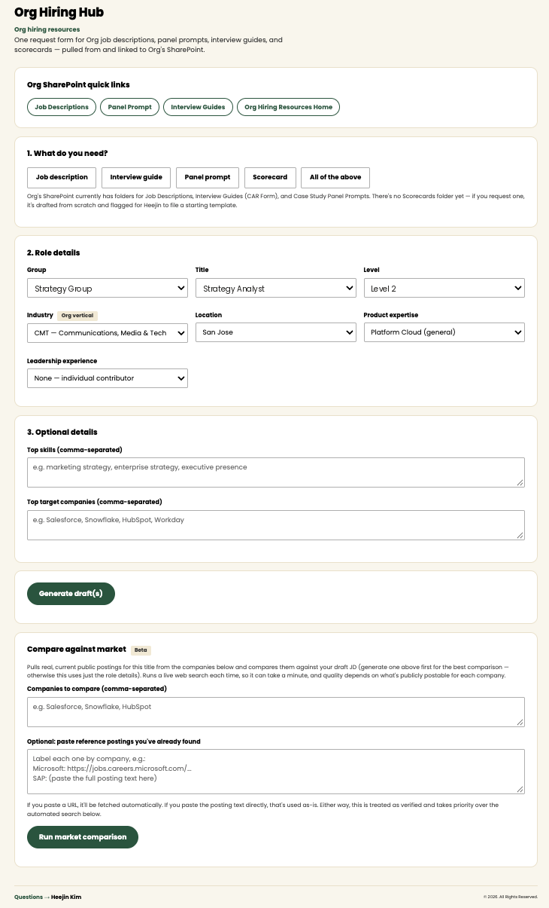
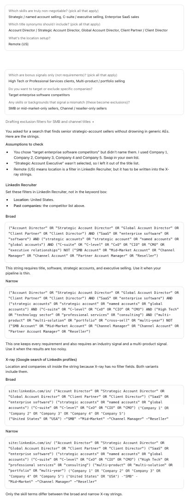
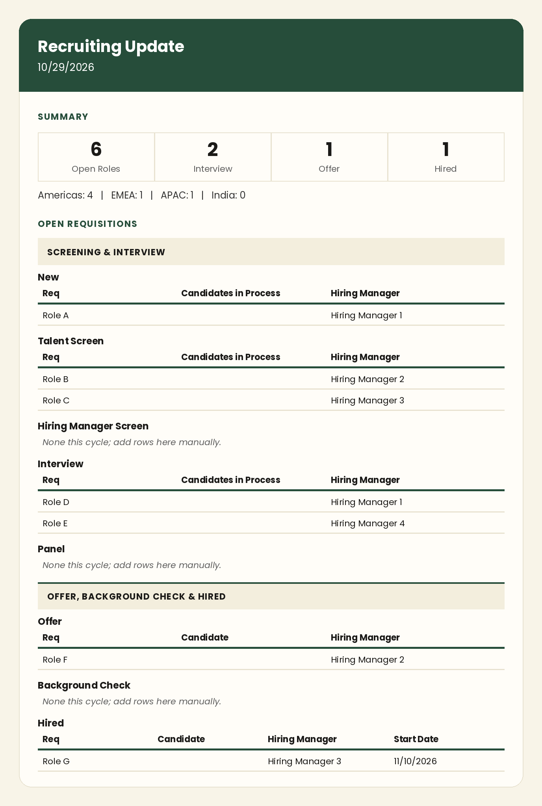
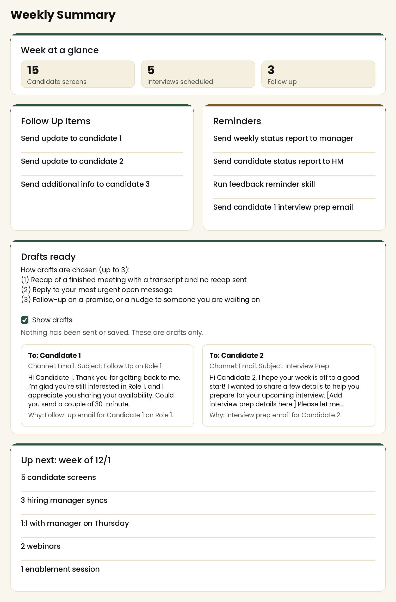

The workflows I’ve built to keep recruiting organized, make everyday tasks easier and create more space for meaningful conversations.
I built a self-serve Hiring Hub for the three businesses I support — a form where a hiring manager picks their group, title, level, and location, and it generates a first-draft job description, panel prompt, interview guide, scorecard and market insights report on the spot, pulling from our existing SharePoint templates where they exist.

Click to expandUses job descriptions and intake notes to create Boolean search strings with broader options to explore the talent pool and targeted searches to refine results.

Click to expandTurns pipeline data and notes into clear updates for leadership in an email friendly format.

Click to expandBring pipeline, hiring data and daily priorities into one view, helping me track each search, draft follow-up messages and plan a balanced workload.

Click to expandExamples are adapted from my own workflows, with company branding and internal details removed.